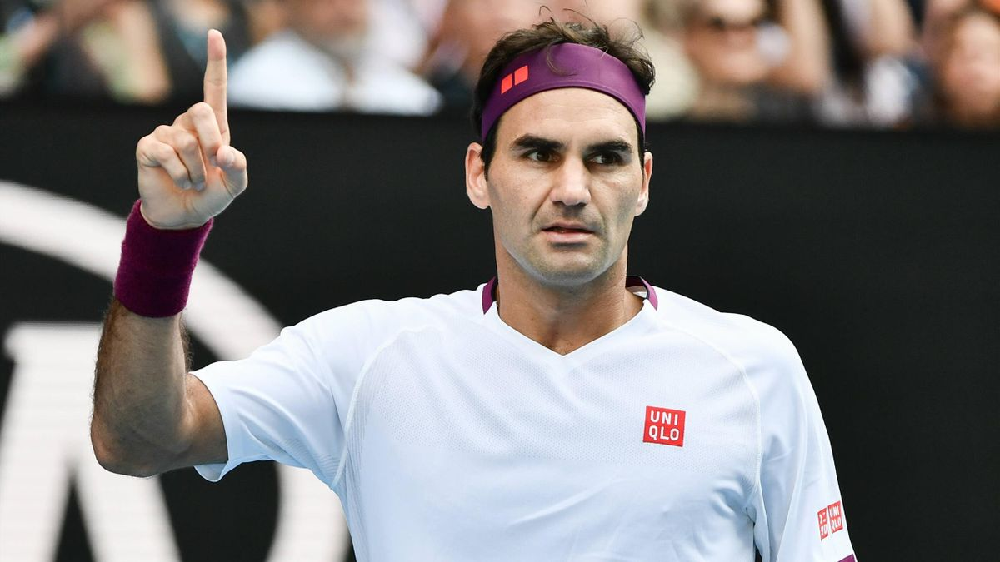

About Roger Federer
A famous and very good tennis player is Roger Federer so here is a bit about him.
Federer won the Wimbledon boys' singles and doubles titles in 1998, and turned professional later that year. At Wimbledon in 2001, he caused a sensation by knocking out reigning singles champion Pete Sampras in the fourth round. In 2003, following a successful season on grass, Federer became the first Swiss man to win a Grand Slam title when he emerged victorious at Wimbledon. At the beginning of 2004, Federer had a world ranking of No. 2, and that same year, he won the Australian Open, the U.S. Open, the ATP Masters and retained the Wimbledon singles title. He was ranked No. 1 at the start of 2005, and his successes that year included the Wimbledon singles title (for a third successive year) and the U.S. Open. Federer held on to his No. 1 ranking from 2004 into 2008. In 2006 and '07, he won the singles championships at the Australian Open, Wimbledon and the U.S. Open. A paragon of graceful athleticism, Federer was named the Laureus World Sportsman of the Year from 2005-08. In 2008, Federer beat Scottish player Andy Murray at the U.S. Open — his fifth U.S. Open win. However, that year proved to be a difficult time in Federer's career: He lost to rival Rafael Nadal at both the French Open and Wimbledon, and lost to another young star, Novak Djokovic, at the 2008 Australian Open. His ranking also slid to No. 2 for the first time in four years.
